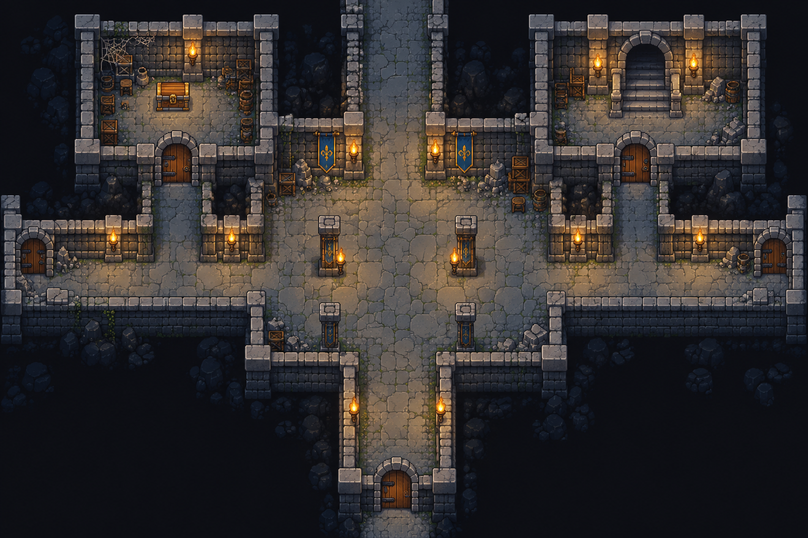

01 · 최초 시안
분위기 기준
비교할 세 가지
벽의 두께와 모서리 · 차가운 돌과 따뜻한 빛 · 캐릭터가 놓이는 공간의 크기
방 개수·크기·배치와 통로 연결이 시드마다 달라집니다. 기둥 홀·대홀·회랑·작은 방이 조합되며, 소품은 각 방의 여유 공간에 맞춰 놓입니다.
02 · 실제 랜덤 던전
던전 준비 중게임 화면으로 열기 ↗
부품과 생성기를 준비하고 있습니다.
최초 시안과 실제 무작위 던전을 나란히 살펴보는 작은 실험

비교할 세 가지
벽의 두께와 모서리 · 차가운 돌과 따뜻한 빛 · 캐릭터가 놓이는 공간의 크기
방 개수·크기·배치와 통로 연결이 시드마다 달라집니다. 기둥 홀·대홀·회랑·작은 방이 조합되며, 소품은 각 방의 여유 공간에 맞춰 놓입니다.
부품과 생성기를 준비하고 있습니다.